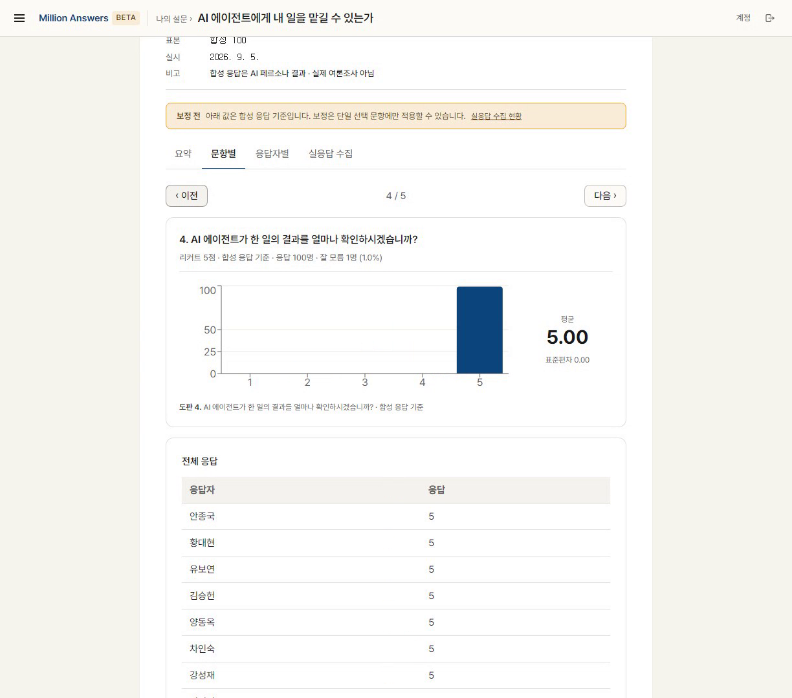
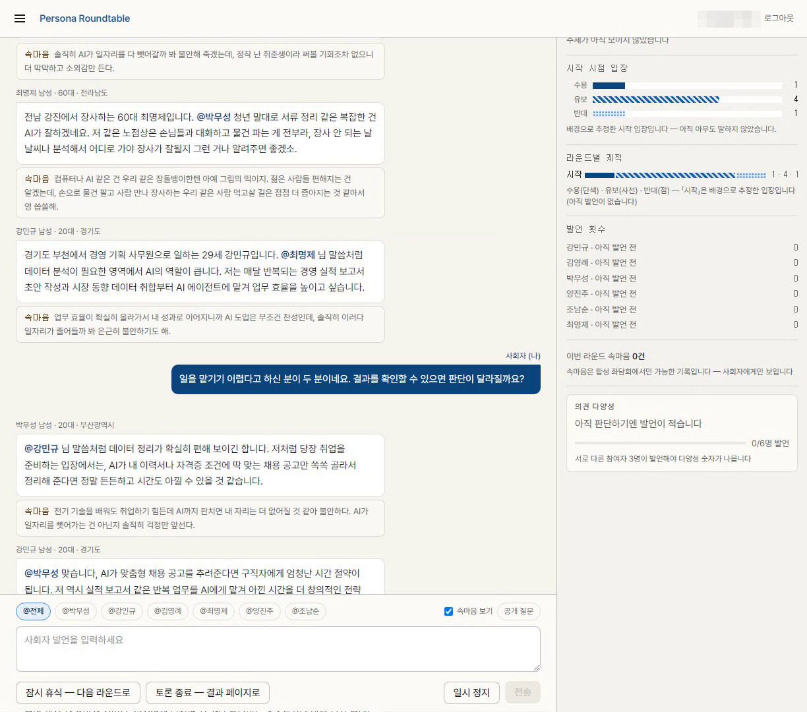
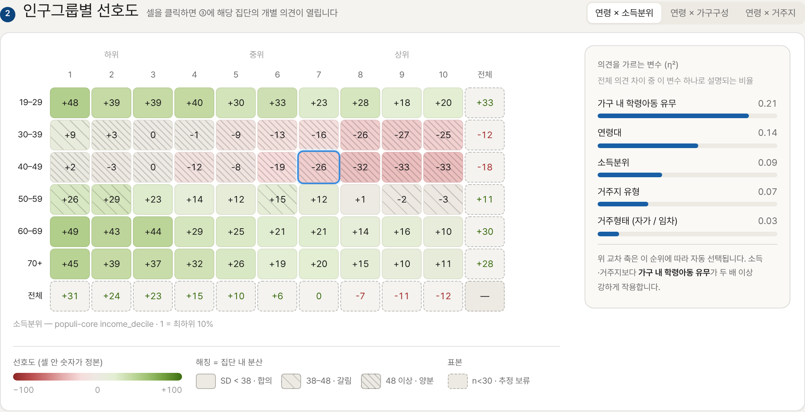
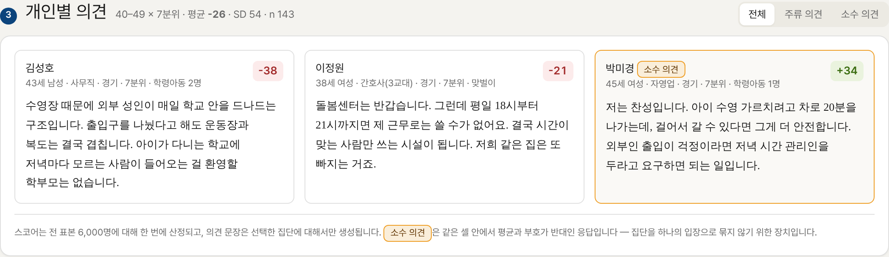
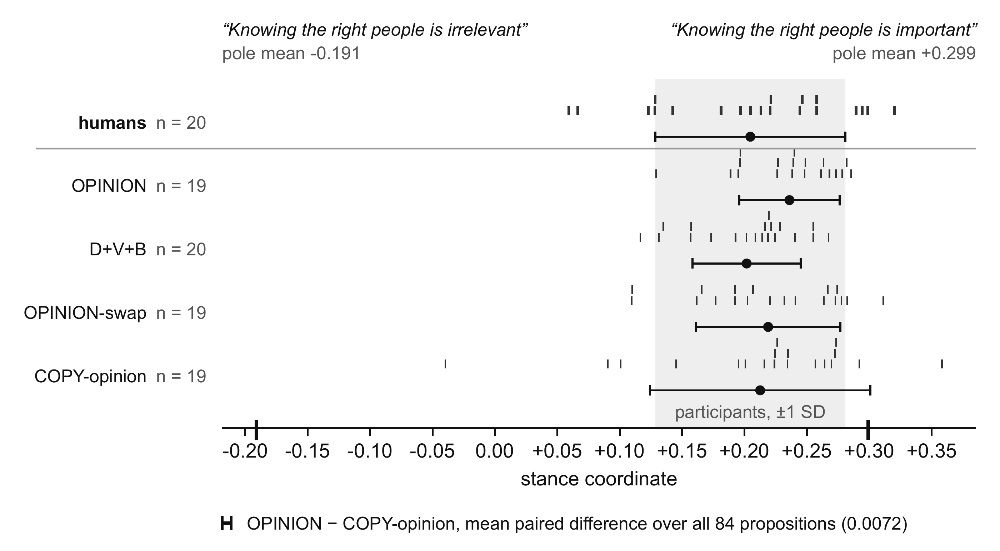

INSTITUTE FOR LATENT PUBLICS
말하지 않는 다수에게
어떻게 물어볼 것인가
결정을 발표하기 전에, 집단의 반응을 먼저 잰다
박영준 · 건축학 박사
ar-ge 건축사사무소 공동창업자 겸 CTO · (전) KAIST 도시인공지능연구소 연구원
KAIST OVEREDGE
FINAL AUDITION · 2026 · 10
결정을 발표하기 전에, 집단의 반응을 먼저 잰다
박영준 · 건축학 박사
ar-ge 건축사사무소 공동창업자 겸 CTO · (전) KAIST 도시인공지능연구소 연구원
KAIST OVEREDGE
FINAL AUDITION · 2026 · 10
“5분만 시간을 내어,
설문조사에 응해주시겠어요?”
이 한 줄을 부탁하는 데 드는 것
통계 분포대로 가상의 주민을 만들고, 각자의 조건을 반영한 LLM에게 같은 질문을 병렬로 던진다
합성인구 인프라위 두 갈래를 받치는 공통 기반
2026년 7월 시작 시점에는 아무것도 없었다. 지금은 사업 구조의 세 층을 모두 갖췄다
서비스 · 회원 · 계약
모두 없음
합성인구 인프라
합성인구 DB
1,000명 응답 수집
국내 학술지 게재 · 국제 심사중
자체 서비스
서비스 출시 · 운영
가입 회원 · 광고 없이
운영대행 라이선스 계약 제안
맞춤형 개발
계약 체결 · ClawClip
협의 중
OverEdge 동료 창업자들의
합성인구 활용 요청에서 시작

조건 지정 → 응답 → 리포트 · 문항별·응답자별 · PDF·XLSX 내보내기

사람 사회자의 질문 → 합성 참여자의 발언 · 속마음 · 입장 분기 집계
보도자료를 발표하기 전에, 수천 명의 인구그룹별 반응과 그 이유를 한 번에 본다


학교복합시설 설계공모 발표
신도시 공사의 보도자료 · 기관과 사례는 가상
전 표본 반응 점수를 11초에 동시 산정
가구 내 학령아동 유무
소득·거주지보다 두 배 이상 강하게 작용
선택한 집단에만 LLM으로 생성 · 평균과 반대인 소수 의견까지 표시
경기도청 · 경기주택공사 · 디벨로퍼 후속 미팅
시안 화면 (2026-10-12) · 모든 수치와 문장은 AI 생성 시뮬레이션이며 실제 응답이 아님
소상공인 마케팅 서비스 안에서, 가게 주변 손님층이 홍보 시안에 어떻게 반응할지 점주가 먼저 본다
7~8월에 두 서비스를 만들고, 9~10월에는 멘토링과 고객 미팅에서 받은 질문을 제품과 사업 방향에 반영
순서대로 묻는 설문
한 번에 재는 반응 스코어링
일반 사용자 구독
공공·기업 B2B와 파트너
창업자가 직접 홍보
국내 운영대행 파트너
합성 응답의 한계를 직접 재고, 그 한계 안에서 쓰는 조건을 정했다

읽는 법 한 주제에 대한 의견을 찬반 축 위의 좌표로 바꾼 결과 · 회색 띠는 실제 참가자의 평균 ±1 SD
결과 모든 합성 조건의 평균이 사람의 범위 안에 든다. 그러나 같은 사람끼리 비교하면 크게 어긋나고, 가치관·생애사를 더해도(D+V+B) 개인은 나아지지 않는다
Matching the Population Is Not Matching the Person: A Protocol for Evaluating LLM-Simulated Responses · International Journal of Public Opinion Research 심사중 · DEBATE 867명 · Figure 2
정확한 예측보다 다양한 가상 사람이 필요한 훈련·테스트 용도도 같은 조건을 충족
실제 반응으로 평가하고, 가볍게 학습해 다시 서비스에 쓴다. 이 휠이 사업의 핵심이다
1 · 학습 파이프라인
반응을 찬반 축 위의 좌표로 바꿔 실제와의 거리로 평가하고(국제 학술지 심사중), 그 값을 임베딩 단계에서 가볍게 학습하는 구조를 설계했다
2 · 많은 사용자
자체 서비스, 운영대행 파트너, 맞춤형 개발이 실제 반응을 모은다
semantic projection · Grand et al., Nature Human Behaviour (2022)
확정에 가까운 라이선스 매출 위에, 고객 수와 프로젝트 수에 비례하는 두 매출원
컨설팅·마케팅 회사가 Million Answers · Persona Roundtable의 국내 홍보·운영을 맡고 라이선스비를 지급
유료 고객 수 × 이용료
Posting Simulator도 같은 이용료 모델로 합류
프로젝트 수 × 프로젝트 단가
공공기관 사전 검토 프로젝트도 같은 구조
Million Answers 국내 확장안 · 파트너가 직접 제안한 로드맵
TRACK 0 · 자사 적용
파트너가 수행하는 홍보·컨설팅 과업에 먼저 적용해 첫 레퍼런스를 만든다
제안서 적용→첫 레퍼런스
TRACK A · 예비창업자
사업계획서의 가장 약한 부분인 수요 검증을 무료 체험으로 채우고, 실응답 보정 상품으로 전환
무료 체험→유료 전환→사례 공유
TRACK B · 에이전시·기업
고객 자신의 카피·시안으로 10분 안에 결과를 보여주고, 사례를 쌓아 같은 업종으로 확산
유료 PoC→사례→Enterprise
PHASE 1 · 0~3개월
검증
타깃·가격 검증 · 사람 vs AI 비교실험 · 자사 제안서 적용
다음 단계 기준: 비교실험 오차 데이터
PHASE 2 · 4~6개월
시장 진입
정식 런칭 · 성공 사례 확보 · 검증 보고서 발표
다음 단계 기준: 사례 확보 · 재구매
PHASE 3 · 7~12개월
확장
Enterprise 영업 · 에이전시 파트너십 · 산업별 패키지
다음 단계 기준: Enterprise 계약 · 월 반복 매출
PHASE 4 · 2년차~
확대
산업별 특화 · 공공 본격 진입 · 해외 · API·데이터 사업
장기 방향: 의사결정 시뮬레이션
Persona Roundtable · Posting Simulator의 운영 범위는 별도 협의 예정 · 파트너 회사명은 계약 전 비공개
창업자는 결정하고 검토한다. 기획·연구·대외 활동·개발은 역할별 에이전트가 맡는다
학계·공공 네트워크로 먼저 탐색하고, 국가별 합성인구 위에 세 서비스를 올린다
1단계 · 국내 + 미국 탐색
2단계 · 미국
3단계 · 12개국
투자금 사용처
CHNA: Community Health Needs Assessment · IRS §501(r)(3) · Schedule H 제출 조직 2,272 (IRS CY2016)
ASK BEFORE YOU ACT · 말하지 않는 다수의 반응을 재고, 그 정확도를 계속 높이는 연구소
latentpublics.com
million-answers.com · persona-roundtable.com
박영준 · contact@latentpublics.com
KAIST OVEREDGE
FINAL AUDITION · 2026 · 10
1 / 16
← → 방향키 · 스와이프 · 눈금 클릭으로 이동